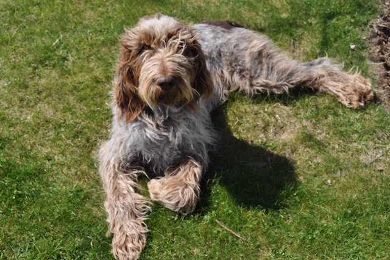

My dog.
Meet my dog Vittorio De Sica. He goes by Vitto for short.
Vitto is nine years old and is a Spinone Italiano. He is very friendly
and enjoys being around people and other dogs.

Some of Vitto's favorite things are:
- Sleeping
- Eating (he eats everything)
- Going on walks
- Digging holes with his pal Nellie, another Spinone Italiano